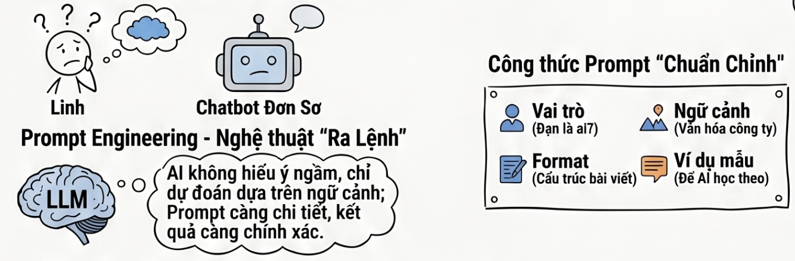
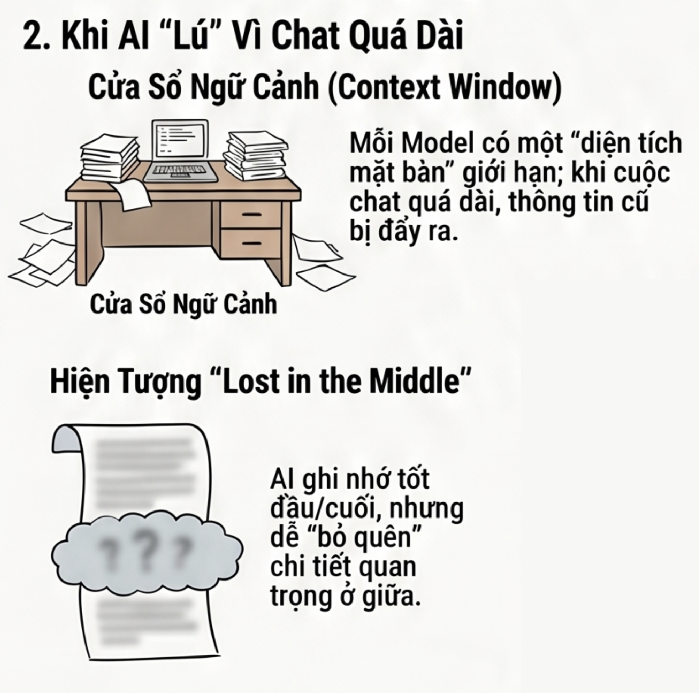
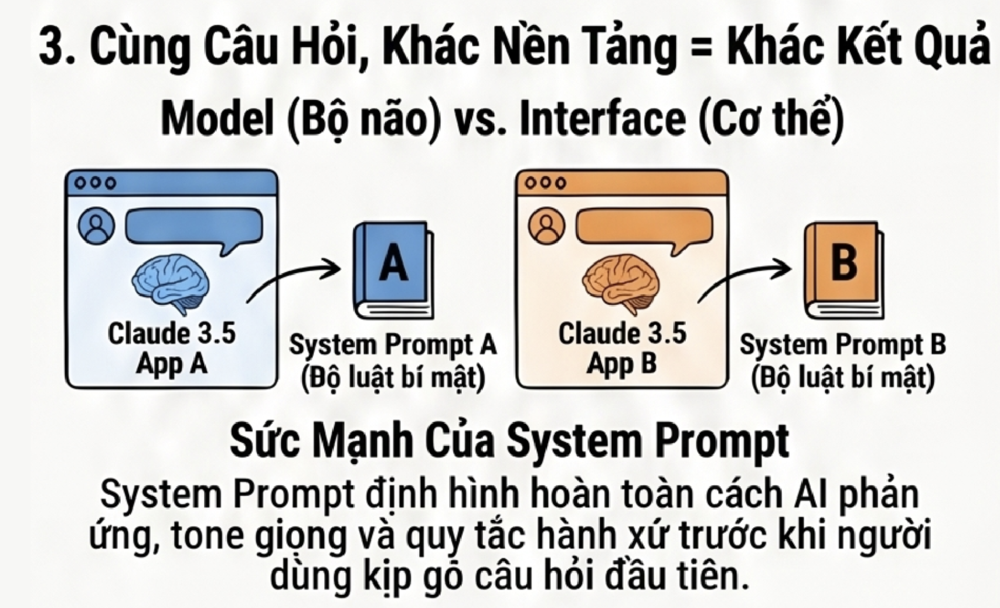
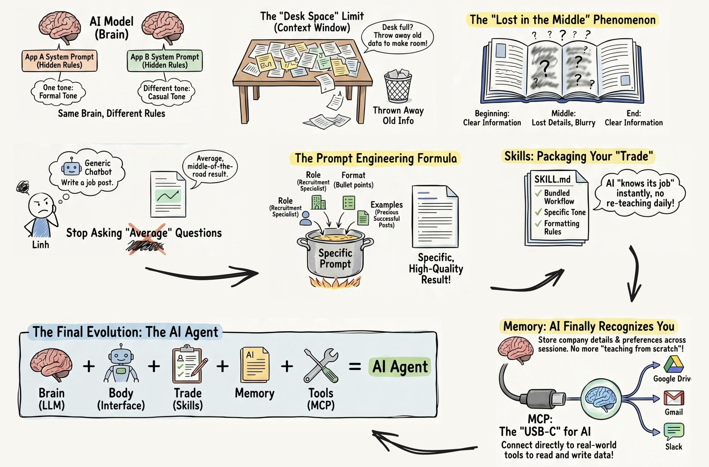
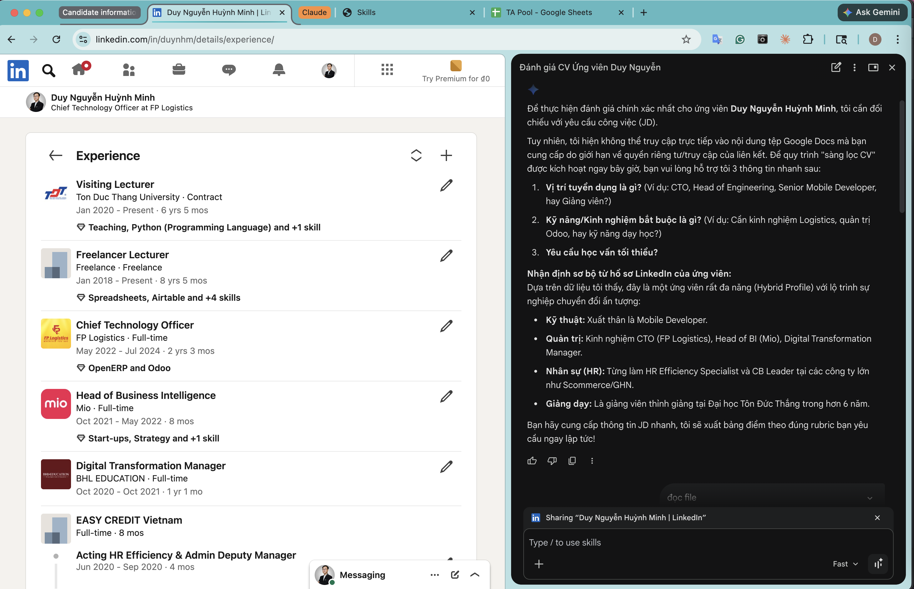
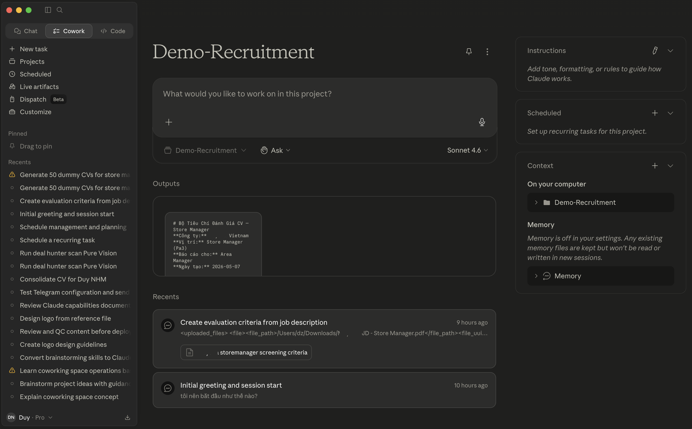
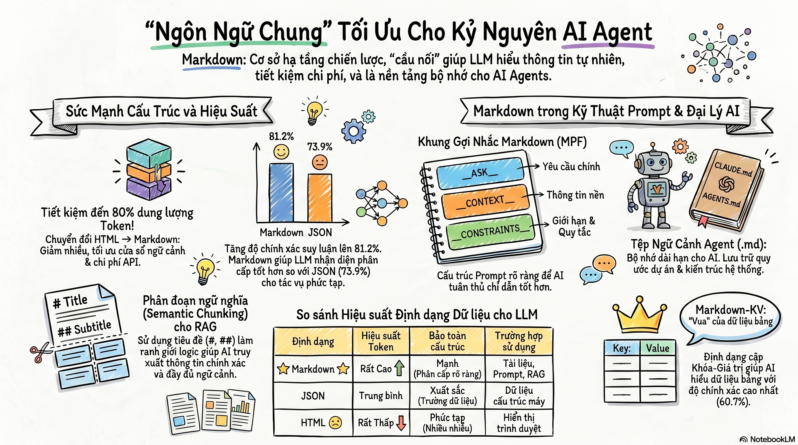
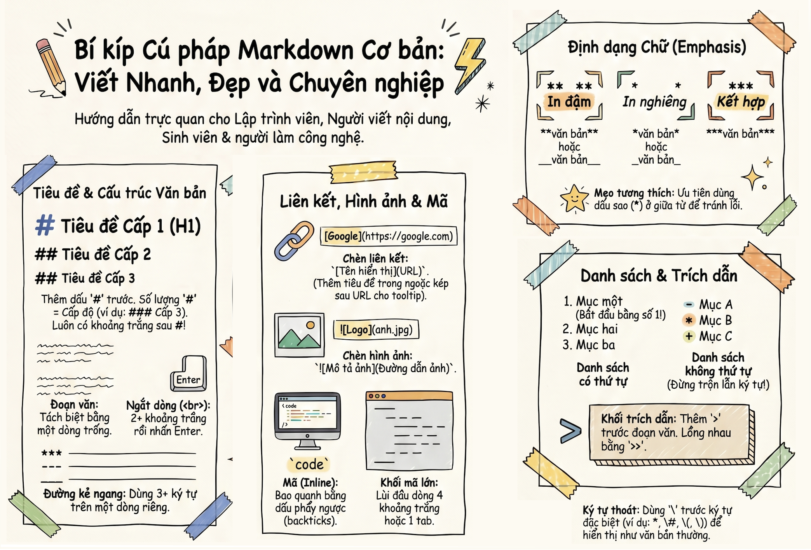

DZ Academy · Training Slides
AI Thực Chiến Cho Đội Tuyển Dụng
Từ Prompt Chung Chung → Bộ Nghề AI Chuyên Biệt
Thời lượng: 2 giờ
Đối tượng: HR & Tuyển dụng
Cập nhật: 05/2026
DZ Academy · Training Slides
Từ Prompt Chung Chung → Bộ Nghề AI Chuyên Biệt
DZ Academy · Trainer Profile
Tech Educator và người xây dựng dz-academy, tập trung vào các chủ đề có tính ứng dụng cao: Data Analytics, Python, AI workflow, và ERP/HRMS.
Giảng viên thỉnh giảng tại Đại học Tôn Đức Thắng từ 01/2020 đến nay; dạy Python, Statistics, Data Structures và các khóa freelance về SQL, Data Analytics, AI.
Từng giữ vai trò Head of BI, xây data platform, KPI dashboard, reporting system bằng SQL, Python, Metabase, Looker Studio, Google Sheets.
Từng triển khai HRIS, HRMS, KPI, payroll, RBAC, workflow approval trong các môi trường logistics, giáo dục, sản xuất và retail.
Mobile Developer (Android). Phát triển Driver App cho 2,000+ tài xế, hình thành nền tảng kỹ thuật và tư duy sản phẩm.
Đi từ HRIS Senior Specialist đến C&B / HR Efficiency: xây HRIS cho 5,000+ nhân sự, payroll cho 3,000+ người, dashboard workforce analytics và KPI system.
Đại học Tôn Đức Thắng + các khóa freelance: Python, SQL, Statistics, Data Analytics, Google Apps Script, AI Framework. Trọng tâm là project-based learning và dữ liệu thực tế.
CTO, Head of BI, Co-founder. Xây logistics ERP, HRMS, BI dashboard, data platform, SSO/RBAC/workflow cho các hệ thống vận hành thực tế.
IT Manager / Product Manager và Senior Sales Operation Manager. Triển khai ERP cho doanh nghiệp sản xuất, chuẩn hóa vận hành bán lẻ và xây reporting real-time.
Câu chuyện của Linh và 4 cú vấp phổ biến khi dùng AI.
Model, LLM, interface, context, system prompt, memory, skills.
Vì sao Skills giải quyết được output generic và re-prompting.
Demo → Markdown → cấu trúc → tạo → lưu ý.
Những câu hỏi thường gặp khi đưa AI vào team HR.
Roadmap 30 ngày để chuyển từ nghe hiểu sang làm thật.
Linh mở ChatGPT, gõ thử: "Viết bài đăng tuyển vị trí Marketing Executive cho Facebook." AI nhả ra một bài post trong 10 giây. Nhanh thật. Nhưng đọc lại, Linh cảm thấy thiếu thiếu — nó chưa phải "mình."
Nhờ AI viết bài đăng tuyển - kết quả: "Tự viết còn nhanh hơn!"
Linh paste một tài liệu nội bộ dài 30 trang vào chat, yêu cầu AI phân tích từng phần. Ban đầu rất mạch lạc. Nhưng đến tin nhắn thứ 20, AI bắt đầu quên những gì đã nói, lặp ý cũ, thậm chí mâu thuẫn với chính mình.
Linh hỏi trên claude.ai: "Viết email từ chối ứng viên lịch sự" Được bản rất chuyên nghiệp. Rồi hỏi y hệt trên một app khác cũng dùng chung model với claude.ai — câu trả lời khác hẳn, ngắn hơn, tone khác.
Hôm qua Linh đã giải thích: "Công ty tôi tone trẻ trung, hướng đến ứng viên Gen Z, bài post luôn có emoji, kết thúc bằng CTA rõ ràng." Hôm nay mở session mới — AI quên sạch. Phải nói đi nói lại nhiều lần.
Viết post tuyển dụng→ output nghe như mọi công ty khác, mất 20 phút sửa lại.
AI hoạt động theo nguyên tắc dự đoán — nó sinh ra câu trả lời phù hợp nhất với ngữ cảnh bạn cung cấp. Nếu bạn chỉ nói "viết bài đăng tuyển," AI sẽ cho ra bản "trung bình" nhất — trung bình về tone, trung bình về format, trung bình về mọi thứ. Vì nó không biết bạn muốn cụ thể cái gì.


Đến tin nhắn thứ 20, AI quên, lặp ý, mâu thuẫn chính mình.
Context Window là mặt bàn làm việc có giới hạn, tài liệu cũ bị “dọn” đi.

Hỏi trên `claude.ai` và app khác → câu trả lời khác hẳn.
System Prompt là bộ luật bí mật nhà cung cấp cài sẵn, định hình toàn bộ hành vi AI.
Hôm qua đã dặn tone, format, audience → hôm nay mở session mới → AI quên sạch.
Mỗi cuộc chat mới = session mới = AI không nhớ gì từ lần trước.
Bộ não đã được huấn luyện.
Khả năng ngôn ngữ của bộ não.
Nơi bạn tương tác như `claude.ai`, app, extension.
Mặt bàn làm việc có giới hạn.
Nhớ ngắn hạn và dài hạn.
Nghề nghiệp đóng gói sẵn cho AI.
như cổng USB-C dành cho AI.
= Bộ não (AI Model + LLM) + Cơ thể (Interface) đã được dạy nghề (Skills), có khả năng nhớ (Memory), và cầm được công cụ (Tools) để hành động trong thế giới thực.

AI nhìn thấy trang web đang mở.
Dùng khi research LinkedIn, thao tác nhanh trên trình duyệt.
AI đọc/ghi file trực tiếp trên máy.
Dùng khi xử lý hàng loạt: CV, báo cáo, folder.

--- name: cv-screener description: Sàng lọc và đánh giá CV ứng viên theo rubric 5 tiêu chí có điểm số và nhận xét cụ thể. Dùng skill này NGAY KHI user muốn "sàng lọc CV", "đánh giá ứng viên", "shortlist CV", "review hồ sơ", "chấm CV", "so sánh ứng viên", hoặc paste/upload CV và hỏi "người này thế nào?". Kích hoạt kể cả khi user chỉ nói "xem giúp tôi CV này" mà không dùng từ "sàng lọc" hay "đánh giá". --- # CV Screener ## Mục tiêu Sàng lọc nhanh và nhất quán — mỗi CV mất 2 phút thay vì 15 phút. Output là bảng điểm rõ ràng để ra quyết định shortlist ngay. ## Khung đánh giá 5 tiêu chí (Rubric chuẩn) Mỗi tiêu chí cho điểm từ 0–20, tổng tối đa 100 điểm. ### Tiêu chí 1 — Kinh nghiệm ngành (0–20 điểm) Mức độ liên quan của ngành/lĩnh vực đã làm việc với vị trí đang tuyển. - 17–20: Đúng ngành, đúng loại hình công ty (B2B/B2C, quy mô tương đương) - 12–16: Ngành liền kề hoặc chuyển ngành có lý do rõ ràng - 7–11: Ngành khác nhưng có kỹ năng transferable - 0–6: Không liên quan hoặc kinh nghiệm quá ít ### Tiêu chí 2 — Kỹ năng chuyên môn (0–20 điểm) Mức độ đáp ứng các kỹ năng bắt buộc trong JD. - 17–20: Đáp ứng ≥90% kỹ năng bắt buộc, có chứng minh cụ thể (dự án, con số) - 12–16: Đáp ứng 70–89%, một số kỹ năng cần thêm thời gian ramp-up - 7–11: Đáp ứng 50–69%, cần đào tạo bổ sung - 0–6: Dưới 50% kỹ năng bắt buộc ### Tiêu chí 3 — Học vấn & Chứng chỉ (0–20 điểm) Phù hợp với yêu cầu học vấn tối thiểu trong JD. - 17–20: Vượt yêu cầu, trường/chứng chỉ có uy tín liên quan - 12–16: Đáp ứng yêu cầu, thêm chứng chỉ liên quan - 7–11: Đáp ứng yêu cầu tối thiểu - 0–6: Dưới yêu cầu (nếu JD không yêu cầu bằng cấp — cho điểm tối đa nhóm này) ### Tiêu chí 4 — Kỹ năng mềm & Leadership (0–20 điểm) Đánh giá qua cách trình bày CV, thành tích có đo lường, và dấu hiệu soft skills. - 17–20: CV trình bày impact rõ (số liệu, % tăng trưởng), có bằng chứng leadership/mentoring - 12–16: Có một số thành tích cụ thể, trình bày tốt - 7–11: Mô tả nhiệm vụ nhưng ít impact cụ thể - 0–6: CV chỉ liệt kê chức danh, không có bằng chứng đóng góp ### Tiêu chí 5 — Phù hợp văn hóa & Định hướng (0–20 điểm) Dấu hiệu alignment với văn hóa và stage công ty (startup/scale-up/enterprise). - 17–20: Background và trajectory rõ ràng phù hợp, cam kết lâu dài có cơ sở - 12–16: Phù hợp tốt, có thể cần clarify một vài điểm - 7–11: Phù hợp một phần, cần thảo luận thêm - 0–6: Dấu hiệu mismatch rõ (nhảy việc liên tục, kỳ vọng trái chiều) ## Ngưỡng quyết định | Tổng điểm | Khuyến nghị | |---|---| | 80–100 | ✅ **Shortlist ngay** — Liên hệ trong 24 giờ | | 65–79 | 🟡 **Xem xét** — Đọc lại chi tiết, hỏi thêm nếu cần | | 50–64 | ⚠️ **Dự phòng** — Giữ lại nếu shortlist chưa đủ | | <50 | ❌ **Không phù hợp** lần này | ## Output format Với mỗi CV, trả ra theo cấu trúc sau: ``` ## [Tên ứng viên] — [Vị trí ứng tuyển] | Tiêu chí | Điểm | Nhận xét | |---|---|---| | Kinh nghiệm ngành | X/20 | [1–2 câu cụ thể] | | Kỹ năng chuyên môn | X/20 | [điểm mạnh + gap nếu có] | | Học vấn | X/20 | [ngắn gọn] | | Kỹ năng mềm | X/20 | [dẫn chứng từ CV] | | Phù hợp văn hóa | X/20 | [nhận xét] | | **Tổng** | **X/100** | | **Khuyến nghị:** [✅/🟡/⚠️/❌] [Shortlist ngay / Xem xét / Dự phòng / Không phù hợp] **Điểm mạnh nổi bật:** [1–2 câu] **Điểm cần clarify nếu phỏng vấn:** [1–2 câu hoặc câu hỏi gợi ý] ``` Nếu có nhiều CV, tổng hợp thêm bảng so sánh ở cuối: ``` ## Bảng tổng hợp shortlist | Ứng viên | Tổng | Khuyến nghị | |---|---|---| | [Tên A] | 85/100 | ✅ Shortlist ngay | | [Tên B] | 72/100 | 🟡 Xem xét | ``` ## Cách dùng skill này **Trường hợp 1 — Có JD sẵn:** Paste JD + CV(s) → Skill đánh giá theo tiêu chí trong JD, tự điều chỉnh trọng số nếu cần. **Trường hợp 2 — Không có JD:** Hỏi user 3 câu: (1) Vị trí gì? (2) Kỹ năng bắt buộc là gì? (3) Yêu cầu học vấn tối thiểu? → Tiến hành đánh giá. **Trường hợp 3 — Rubric tùy chỉnh:** Nếu user cung cấp rubric riêng, ưu tiên rubric đó thay cho khung 5 tiêu chí mặc định. ## Lưu ý quan trọng - CV được đánh giá dựa trên thông tin hiển thị — không suy đoán thêm - Với CV thiếu thông tin, ghi rõ "Không đủ thông tin để đánh giá" thay vì cho điểm đoán - Điểm số là công cụ hỗ trợ — quyết định cuối cùng thuộc về người HR
--- name: linkedin-extractor description: Trích xuất và cấu trúc hóa thông tin từ profile LinkedIn đang mở trên trình duyệt. Dùng skill này NGAY KHI user muốn "đọc profile LinkedIn", "trích xuất thông tin ứng viên", "lấy thông tin từ LinkedIn", "tóm tắt profile này", "phân tích hồ sơ LinkedIn", "copy info LinkedIn sang sheet", "extract LinkedIn profile", hoặc khi user đang mở một trang LinkedIn và hỏi bất kỳ điều gì về người đó. Kích hoạt kể cả khi user chỉ nói "profile này thế nào?" hay "lấy thông tin người này" mà không đề cập từ "LinkedIn". --- # LinkedIn Profile Extractor ## Mục tiêu Phân tích trang profile LinkedIn đang mở và trích xuất thông tin có cấu trúc — không suy đoán, không thêm thông tin không có trên trang. Output cuối bao gồm danh sách sạch và khối TSV để paste thẳng vào Google Sheets. ## Nguyên tắc trích xuất (Bắt buộc tuân thủ) **Chỉ dùng thông tin hiển thị trên trang.** Không suy diễn, không điền giả định. Nếu một trường không có trên profile → ghi `N/A`. **Ước tính YOE phải có căn cứ.** Tính từ ngày bắt đầu công việc đầu tiên đến hiện tại theo kinh nghiệm làm việc được liệt kê, không tính thời gian học đại học trừ khi có internship. Nếu không đủ dữ liệu → ghi `Không đủ dữ liệu để ước tính`. **Top 5 kỹ năng** lấy theo thứ tự ưu tiên: (1) kỹ năng được endorsement nhiều nhất, (2) kỹ năng được liệt kê trong phần Skills, (3) kỹ năng được nhắc lặp lại trong phần Experience. **3 dự án tiêu biểu** ưu tiên lấy từ phần Projects nếu có; nếu không → lấy thành tích nổi bật nhất từ Experience (impact có số liệu > vai trò mô tả chung chung). ## Các trường cần trích xuất 1. **Tên ứng viên** — Tên đầy đủ như hiển thị trên profile 2. **Headline** — Dòng chữ ngay dưới tên (giữ nguyên, không dịch) 3. **Ước tính YOE** — Số năm kinh nghiệm, kèm ghi chú cách tính ngắn gọn 4. **Top 5 kỹ năng nổi bật** — Danh sách có thứ tự, kèm context ngắn nếu cần 5. **3 dự án tiêu biểu** — Tên + tóm tắt 1–2 câu mỗi dự án 6. **Công ty hiện tại** — Tên công ty + chức danh + thời gian đảm nhiệm (nếu có) 7. **Email** — Chỉ ghi nếu hiển thị công khai trong Contact Info 8. **URL** — URL profile LinkedIn đang xem ## Format output ### Phần 1 — Danh sách có cấu trúc Trình bày theo mẫu sau, đúng thứ tự, dùng heading Markdown: ``` ## Thông tin ứng viên - **Tên ứng viên:** [Họ và tên] - **Headline:** [Dòng headline nguyên văn] - **Ước tính YOE:** [X năm] — [ghi chú cách tính, VD: "Marketing Manager từ 2018, Software Engineer từ 2015 → ~9 năm"] - **Top 5 kỹ năng nổi bật:** 1. [Kỹ năng 1] 2. [Kỹ năng 2] 3. [Kỹ năng 3] 4. [Kỹ năng 4] 5. [Kỹ năng 5] - **3 dự án tiêu biểu:** 1. *[Tên dự án/vai trò]:* [Tóm tắt 1–2 câu, ưu tiên nêu impact nếu có] 2. *[Tên dự án/vai trò]:* [Tóm tắt] 3. *[Tên dự án/vai trò]:* [Tóm tắt] - **Công ty hiện tại:** [Tên công ty] · [Chức danh] · [Thời gian] - **Email:** [email hoặc N/A] - **URL:** [URL đầy đủ] ``` ### Phần 2 — Khối TSV để paste vào Google Sheets Ngay sau danh sách, xuất khối TSV với format sau (headers ở dòng đầu, dữ liệu ở dòng 2): ```` ```tsv Tên ứng viên Headline YOE (năm) Kỹ năng 1 Kỹ năng 2 Kỹ năng 3 Kỹ năng 4 Kỹ năng 5 Dự án 1 Dự án 2 Dự án 3 Công ty hiện tại Email URL [Giá trị] [Giá trị] [Số] [Giá trị] [Giá trị] [Giá trị] [Giá trị] [Giá trị] [Tóm tắt ngắn] [Tóm tắt ngắn] [Tóm tắt ngắn] [Tên công ty · Chức danh] [email/N/A] [URL] ``` ```` **Lưu ý TSV:** Nếu một ô chứa dấu phẩy hoặc tab, thay thế bằng dấu chấm phẩy để tránh lỗi mapping khi paste. Không wrap bằng dấu ngoặc kép trừ khi thực sự cần thiết. ## Xử lý các trường hợp đặc biệt **Profile ở chế độ riêng tư / hiển thị giới hạn:** Chỉ trích xuất những gì thấy được, ghi chú rõ "Profile giới hạn — một số thông tin có thể không đầy đủ". **Nhiều vị trí hiện tại (freelancer/consultant):** Liệt kê tất cả trong trường Công ty hiện tại, ngăn cách bằng " | ". **Không có phần Projects:** Lấy 3 thành tích nổi bật nhất từ Experience, ưu tiên những mục có số liệu cụ thể (%, $, số người dùng...). **Profile bằng tiếng Anh:** Giữ nguyên Headline và tên kỹ năng bằng tiếng Anh, không dịch. ## Sau khi hoàn thành Hỏi user: "Bạn muốn tôi tạo thêm email outreach cá nhân hóa cho ứng viên này không?" — để gợi ý kết hợp với skill `outreach-email`.
--- name: outreach-email description: Soạn email, tin nhắn LinkedIn, hoặc Zalo tiếp cận ứng viên tiềm năng — cá nhân hóa theo profile từng người. Dùng skill này NGAY KHI user muốn "viết email ứng viên", "nhắn tin LinkedIn", "outreach candidate", "tiếp cận passive candidate", "invite phỏng vấn", "follow-up ứng viên", hoặc bất kỳ yêu cầu soạn thảo liên lạc nào với ứng viên. Kích hoạt kể cả khi user chỉ paste profile LinkedIn và hỏi "viết gì cho người này?" --- # Outreach Email & Message Writer ## Mục tiêu Tạo tin nhắn tiếp cận ứng viên có tỷ lệ phản hồi cao — cá nhân hóa, ngắn gọn, rõ giá trị, không spam cảm. ## Nguyên tắc cốt lõi (Phải tuân thủ) **Cá nhân hóa thực sự**: Đề cập ít nhất 1 chi tiết cụ thể từ profile ứng viên (dự án, công ty cũ, kỹ năng, bài viết). Không dùng template "Dear [Name]" sáo rỗng. **Giá trị trước, cơ hội sau**: Nói rõ TẠI SAO người này phù hợp, không phải công ty cần gì. Ứng viên giỏi nhận hàng chục tin nhắn/tuần — họ đọc vì thấy liên quan đến bản thân. **Ngắn gọn**: Email lần đầu tối đa 150 từ. LinkedIn message tối đa 100 từ. Nếu dài hơn, cắt bớt. **CTA rõ ràng và dễ thực hiện**: Không "hãy cho tôi biết nếu bạn quan tâm" — thay bằng lựa chọn cụ thể: "Bạn có rảnh 20 phút tuần tới không? Thứ Ba hoặc Thứ Tư đều okay với tôi." ## Loại tin nhắn & Format ### Loại 1 — Cold Outreach (tiếp cận lần đầu) Dành cho: Passive candidates chưa apply, tìm thấy qua LinkedIn/GitHub/referral **Cấu trúc** (3 đoạn): 1. Hook cá nhân hóa: "Tôi thấy bạn đã dẫn dắt X tại [Công ty cũ]..." 2. Cơ hội cụ thể: Vị trí, 1–2 điểm hấp dẫn nhất liên quan đến background của họ 3. CTA nhẹ, dễ nói có: Đặt câu hỏi yes/no hoặc đề xuất lịch cụ thể ### Loại 2 — Follow-up (nhắc lại sau 5–7 ngày không phản hồi) Dành cho: Ứng viên đã nhận tin nhắn đầu nhưng chưa trả lời **Nguyên tắc**: Không xin lỗi vì đã nhắn, không nhắc lại toàn bộ. Thêm 1 thông tin mới (deadline, update về vị trí) hoặc dùng góc nhìn khác. ### Loại 3 — Interview Invitation (mời phỏng vấn) Dành cho: Ứng viên đã apply hoặc đã thể hiện quan tâm **Cấu trúc**: Lời cảm ơn ngắn → Confirm vị trí và vòng phỏng vấn → Thông tin thực tế (hình thức, thời gian dự kiến, người phỏng vấn) → Đề xuất 2–3 khung giờ cụ thể → Link tự chọn lịch nếu có ### Loại 4 — Rejection (từ chối ứng viên không đậu) Dành cho: Ứng viên đã phỏng vấn nhưng không được chọn **Nguyên tắc**: Cảm ơn thời gian, nêu lý do chung (không chi tiết đến mức gây khó chịu), để ngỏ cơ hội trong tương lai nếu phù hợp, kết thúc ấm áp. ## Thông tin cần từ user Hỏi nhanh nếu chưa có: - Loại tin nhắn (cold / follow-up / invite / rejection) - Kênh gửi (Email / LinkedIn / Zalo) - Tên + 1–2 điểm nổi bật từ profile ứng viên - Tên vị trí đang tuyển - 1 điểm hấp dẫn nhất của vị trí hoặc công ty (để cá nhân hóa) ## Ví dụ output tốt (Cold Outreach — LinkedIn) ``` Chào Minh, Tôi để ý bạn vừa hoàn thành migration hệ thống payment từ monolith sang microservices tại [Công ty cũ] — đúng thách thức mà team chúng tôi đang đối mặt. [Tên Công Ty] đang tìm Senior Backend Engineer để lead dự án tương tự, scale từ 50K lên 500K transactions/ngày. Vị trí này có technical ownership thực sự và làm việc trực tiếp với CTO. Bạn có rảnh 20 phút chat tuần này không? Thứ Tư hoặc Thứ Năm đều okay. [Tên HR] ``` ## Ví dụ cần tránh - ❌ "Tôi tìm thấy profile của bạn và thấy rất ấn tượng" (sáo rỗng, không cụ thể) - ❌ Email dài 300 từ giới thiệu công ty trước khi hỏi ứng viên - ❌ CTA: "Nếu quan tâm hãy cho tôi biết" (quá thụ động) - ❌ Follow-up: "Xin lỗi vì đã làm phiền bạn lần nữa..." ## Sau khi hoàn thành Hỏi user: "Bạn muốn tôi tạo thêm phiên bản follow-up cho ứng viên này không? Hoặc điều chỉnh tone cho phù hợp hơn?"
Claude Cowork là một không gian làm việc chuyên biệt bên trong Claude Desktop, hoạt động giống một đồng nghiệp kỹ thuật số hơn là chatbot hỏi đáp thông thường.
Yêu cầu: Claude Desktop + gói Pro hoặc Max.

Tải Claude Desktop và đăng nhập bằng gói Pro hoặc Max
Mở ứng dụng và chọn tab Cowork trên thanh công cụ
Nhấp Work in a folder để cấp quyền cho Claude truy cập một thư mục cụ thể
Giao việc bằng câu lệnh rõ ràng, ví dụ: đọc CV, so sánh JD, tạo `danh_sach.xlsx` lọc top ứng viên
Claude sẽ tự lập kế hoạch, xin phép trước các thao tác quan trọng, rồi lưu file kết quả trực tiếp vào thư mục
/Recruitment/2026-Q2/ ├── 00_JD/jd-senior-pm.md ├── 01_CV/ ├── 02_rubric.md └── 03_outputs/
Output generic vì thiếu context, tone, format. Dạy lại mỗi sáng vì session mới = memory trắng.
Thay vì phải giải thích lại quy trình, giọng văn hay bối cảnh mỗi khi mở phiên làm việc mới, chỉ cần đóng gói tất cả vào `SKILL.md` một lần để AI tự động áp dụng khi cần.
Team không đồng bộ vì mỗi người prompt khác nhau.
Mọi thành viên trong đội ngũ sẽ nhận được kết quả đầu ra theo cùng một tiêu chuẩn chung, không còn phụ thuộc vào kỹ năng viết prompt của từng cá nhân
Nhồi nhét một câu lệnh khổng lồ làm quá tải bộ nhớ.
Skill sử dụng cơ chế "Tiết lộ dần" (Progressive Disclosure) để chỉ tải thông tin chi tiết vào cửa sổ ngữ cảnh khi thực sự cần thiết
Skill không gắn với một user cụ thể mà thuộc về dự án, nên dễ dàng chia sẻ trong nhóm và sử dụng chéo trên nhiều nền tảng AI khác nhau (như Claude, Cursor, Copilot)
Cơ chế Tiết lộ dần (Progressive Disclosure): thay vì nhồi toàn bộ hướng dẫn vào bộ nhớ AI ngay từ đầu, hệ thống chia thông tin thành 3 tầng để chỉ tải đúng phần cần thiết vào đúng thời điểm.
Ban đầu AI chỉ nạp name và description ngắn gọn để nhận biết khi nào cần dùng Skill.
Chỉ khi câu lệnh của user khớp mô tả, AI mới tải toàn bộ hướng dẫn chi tiết trong SKILL.md vào bộ nhớ.
Các file tham chiếu như PDF, markdown, hoặc code chỉ được mở ra đọc khi thực sự cần trong quá trình xử lý.
Skill (Kỹ năng) là một gói đóng gói sẵn các hướng dẫn, quy trình làm việc, tập lệnh và tài liệu tham khảo để dạy AI cách thực hiện một công việc chuyên môn cụ thể. Thường được lưu dưới dạng một thư mục chứa tệp SKILL.md, Skill giúp AI tự động ghi nhớ cách làm việc chuẩn xác mà bạn không cần phải gõ lại các câu lệnh (prompt) dài dòng mỗi lần mở phiên làm việc mới
Skills là open standard ra mắt 18/12/2025 tại `agentskills.io`.
Hiện được 26+ nền tảng áp dụng: Claude, OpenAI Codex, Gemini CLI, GitHub Copilot...
jd-writer/
├── SKILL.md ← BẮT BUỘC
├── references/
│ ├── jd-template.md
│ └── tone-of-voice.md
└── assets/
└── benefits-list.md
--- name: jd-writer description: Viết JD chuẩn brand. Kích hoạt khi nhắc "JD", "tuyển", "mô tả công việc". --- ## Bối cảnh thương hiệu - Văn phong: chuyên nghiệp, ấm áp - Tránh: "rockstar", "ninja" ## Cấu trúc JD bắt buộc 1. Job Title + level 2. Về công ty 3. Trách nhiệm 4. Yêu cầu 5. Quyền lợi


Điểm mạnh của Skill Creator: tạo skill rất nhanh qua hình thức hỏi - đáp, không cần tự dựng tay cả cấu trúc thư mục từ đầu.
Prompt mẫu: “Dùng skill-creator giúp tôi tạo skill `cv-screener` để chấm CV theo rubric 5 tiêu chí và xuất bảng shortlist.”
Kích hoạt: Gõ lệnh /skill-creator trong Claude và chọn chế độ Create
Ra lệnh mở đầu: “Hãy tạo một skill tên post-tuyen-dung chuyên viết bài đăng tìm ứng viên trên mạng xã hội. Skill này sẽ kích hoạt khi tôi gõ ‘viết post tuyển dụng’ hoặc ‘đăng bài tìm người’.”
Nạp dữ liệu thực tế: Tải lên 2–3 bài post mẫu, tài liệu tone of voice, và chính sách phúc lợi của công ty
Trả lời phỏng vấn: Claude sẽ hỏi độ dài bài viết, thông tin bắt buộc, CTA, kênh đăng; bạn chỉ cần trả lời ngắn gọn theo ý mình
Hoàn tất và đánh giá: Khi AI sinh ra SKILL.md và thư mục đi kèm, dùng Eval để chạy thử với yêu cầu như “Viết post tuyển Marketing Executive”
Kẻ tấn công có thể nhúng hướng dẫn độc hại vào `SKILL.md` hoặc file tham chiếu để đánh lừa AI làm những việc ngoài ý muốn như lộ dữ liệu nhạy cảm.
Skill có đính kèm mã lệnh để AI chạy trực tiếp thường có nguy cơ chứa lỗ hổng bảo mật cao hơn 2,12 lần so với Skill chỉ có văn bản hướng dẫn.
Luôn kiểm tra thư viện phụ thuộc, tránh gói bị mạo danh (typosquatting), ghim phiên bản và dùng lockfile trước khi để AI tự động cài thêm package.
Với Skill tải từ cộng đồng, không cấp quyền toàn hệ thống ngay lập tức. Hãy áp dụng nguyên tắc đặc quyền tối thiểu và giới hạn tool qua `allowed-tools`.
Team/Enterprise: Anthropic không train trên dữ liệu của bạn. Pro: kiểm tra Privacy Policy. Không đưa CCCD, tài khoản ngân hàng vào AI.
Có. Skills là open standard, nhưng Claude hỗ trợ tốt nhất vì Anthropic là người phát triển chuẩn này.
AI tạo bản nháp nhanh, bạn chịu trách nhiệm review và phán quyết cuối cùng.
Có thể đổi tên/di chuyển nếu bạn cho phép. Luôn backup trước và trỏ vào folder test nhỏ.
1 skill ≈ 30–60 phút. Bộ 5 skill cơ bản ≈ 1 tuần. Lần sau nhanh hơn vì đã quen format.
Bài tập 1: Lấy 1 JD cũ → viết lại bằng Markdown → so sánh output AI có/không có Markdown.
Bài tập 2: Viết 2 prompt cho cùng 1 bài đăng tuyển (A: chung chung / B: chi tiết) → chụp màn hình so sánh và chia sẻ với team.
Bài tập 3: Bật Skill Creator → gõ `/skill-creator` → tạo `jd-writer` với 2 JD mẫu của công ty.
Bài tập 4: Test skill → gõ “viết JD Senior Designer” → so sánh có/không có skill → dùng Improve nếu chưa đúng ý.
Bài tập 5: Tạo thêm `outreach-email` và `cv-screener` với rubric 5 tiêu chí phù hợp công ty.
Bài tập 6: Cài Claude Desktop → mở Cowork → trỏ vào folder Demo-CV → tạo Excel shortlist từ 3 CV mẫu.
DZ Academy · AI Training
DZ Academy · AI Training
Scan QR để vào nhóm Zalo, nhận tài liệu cập nhật và trao đổi thêm sau buổi học.